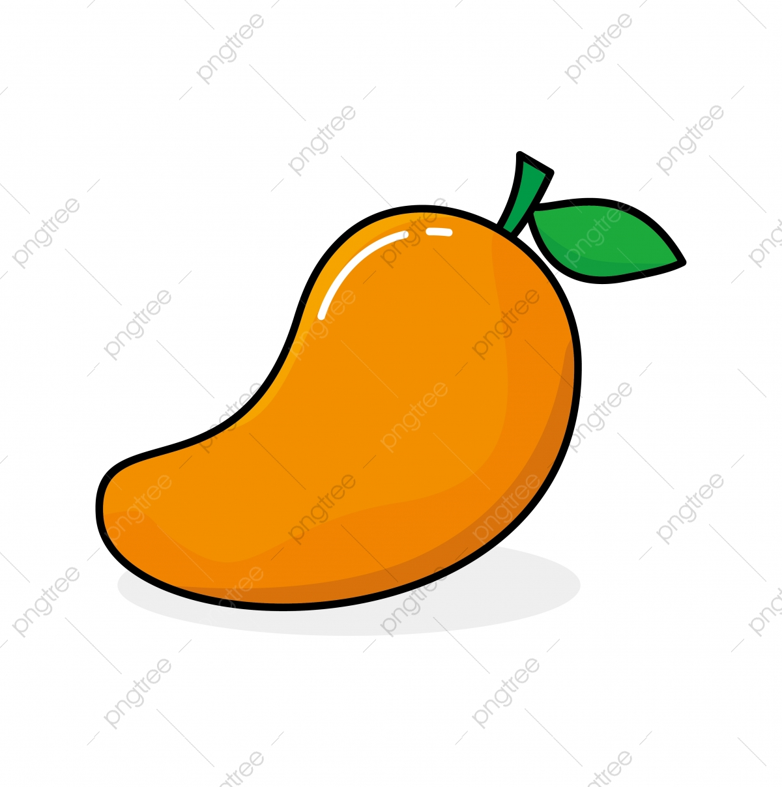

tentangbuah.com
Mangga

Mangga adalah jenis buah-buahan, atau buah yang dihasilkan dari pohon buah
Mangga. Buah mangga biasanya berwarna kuning kulitnya jika masak dan (siap
dimakan), namun bisa juga kulitnya berwarna hijau atau kuning. Kulit
buahnya agak lembek, daging buahnya lembut. Buah ini memiliki biji
di dalamnya.
Nama "mangga" berasal dari bahasa Tamil, mankay, yang berarti man
"pohon mangga" + kay "buah". Kata ini dibawa ke Eropa oleh orang-orang Portugis dan diserap menjadi
manga(bahasa Portugis), mango (bahasa Spanyol dan Inggris) dan lainnya.
Khasiat Mangga
- Menjaga kesehatan mata
- mencegah resiko kanker
- Meningkatkan sistem kekebalan tubuh
- Baik untuk jantung
- Membantu mengatasi sembelit
- Mencegah resiko diabetes
Daftar Harga
| Jenis Mangga | Harga | |
|---|---|---|
| Per Kilo | Per Biji | |
| mangga manalagi | 50.000 | 5000 |
| mangga golek | 40.000 | 4000 |
| mangga gadung | 30.000 | 3000 |
| mangga kopyor | 55.000 | 5500 |